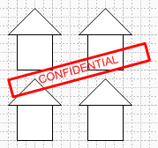
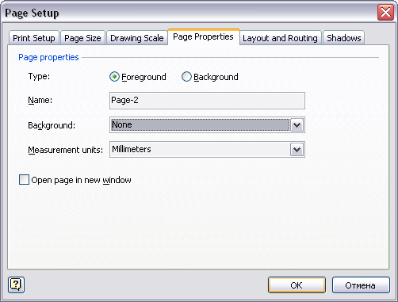
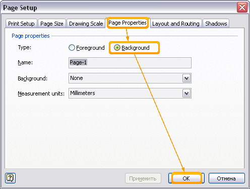
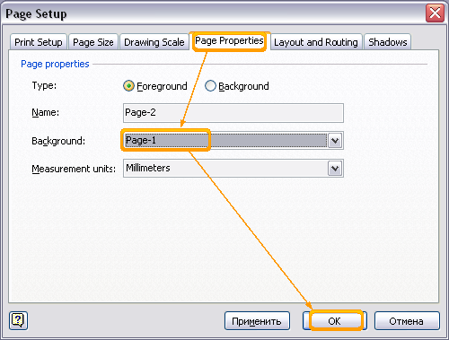
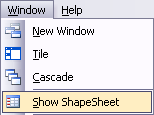
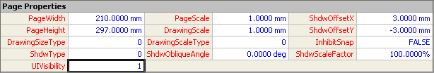
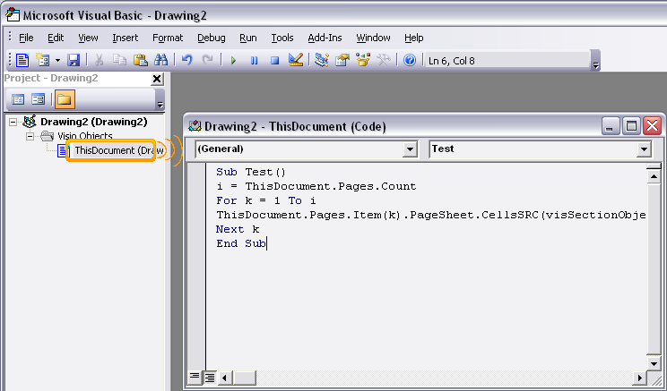
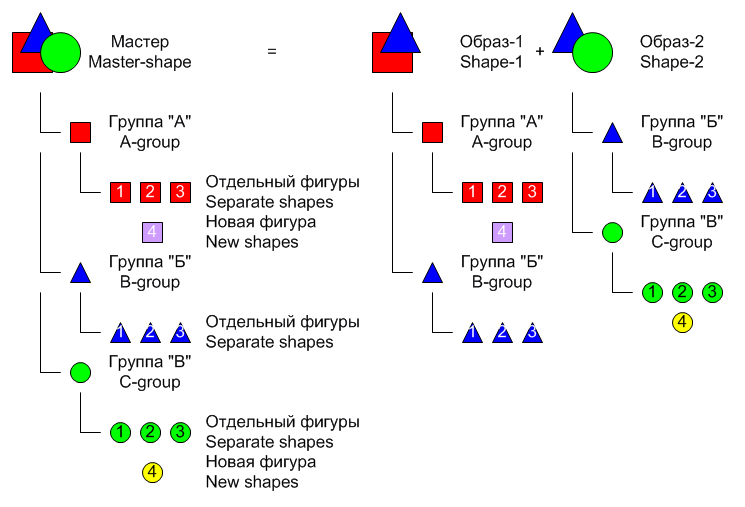

Almost confidentially in Visio 2003.
 Protection of the document is presented in Visio avariciously. More truly protection are not present as those. There is only a protection of some properties of the document, styles. But in the most simple case it can be disconnected. So, how to protect the document? And still to make it it is better so that the person could see only the document or unpack and still an inscription in all Screen " is confidential ". Yes, for these purposes will approach PDF. But in fact after transformation in PDF to edit the document it is possible only in this most reader'a. And in general, absence of means to protection of the document was solved simply, preservation in a graphic format earlier. A graphic format is better approaches for transfer by mail any drawings. For black-and-white is better business of taste approaches PNG or TIFF, but further.
Protection of the document is presented in Visio avariciously. More truly protection are not present as those. There is only a protection of some properties of the document, styles. But in the most simple case it can be disconnected. So, how to protect the document? And still to make it it is better so that the person could see only the document or unpack and still an inscription in all Screen " is confidential ". Yes, for these purposes will approach PDF. But in fact after transformation in PDF to edit the document it is possible only in this most reader'a. And in general, absence of means to protection of the document was solved simply, preservation in a graphic format earlier. A graphic format is better approaches for transfer by mail any drawings. For black-and-white is better business of taste approaches PNG or TIFF, but further.
But sometimes nevertheless there was a necessity of sending of drawings for a vector format. Too there is a decision, importation in a metafile in Word.
Well all right. Is Visio, and with its help and we shall solve this problem. We open Visio, we draw something and it is tried to protect it.

First we create page on a pattern current. (Insert>New Page...)

Then we do page with figures background. (File>Page Setup...>Page properties>Type>Background)

We adjust background page as a background to the basic. (File>Page Setup...>Page properties>Background>Page-1)

Also we hide background of an opportunity of a choice of pages. For this purpose we enter in ShapeSheet pages Page-1, i.e. background page and in section Page Properties in cell UIVisibility we bring 1.


For the present the active window belongs to page with figures, but costs will be switched to other page how to choose figures and something with them to make it will not turn out.
What has turned out? It has turned out, that there is a unique page on which it is impossible to allocate anything, it is possible to draw atop of the given figures, to unpack, and more anything. It is possible to remove still all the master of the document if is interesting.:-)
But time is a way of all this to hide, means there should be a way of all this to return back. Through the interface of the user of it to make it will not turn out and in this case it is possible to consider as "plus". It is necessary macros.
We cause a window of editor Microsoft Visual Basic, or through the menu (Tools>Macros>Visual Basic Editor), or a combination of keys Alt+F11. Then in the editor we choose the document (ThisDocument) and double pressing it we open a window of the editor. Further in this window we bring a code.
Sub Test()
i = ThisDocument.Pages.Count
For k = 1 To i
ThisDocument.Pages.Item(k).PageSheet.CellsSRC(visSectionObject, visRowPage, visPageUIVisibility).FormulaU = "0"
Next k
End Sub

This macros puts 0 in a cell of invisibility of all pages.
It is possible certainly and to make all on another. To make a layer, then to protect it or still somehow, but the matter is that to return this all it is possible too I use the interface of the user, the standard interface. In the given case it is necessary to know, that there is a background page, it is necessary to know, that they can be hidden and in general deeply to understand a question. I.e. in effect it is necessary to know well Visio and still VBA a little the nobility. So the given type of protection will approach for the majority of users Visio. For a dense forest of complexity, it is possible to combine the information on the basic page with background if certainly in it there is a sense. This all otherwise will pour out in a headache.
Advice on work with the program
- That in the further you were not disturbed with a window of presence of macroowls in the document, simply remove them. Strange advice, however it so. If you have removed all modules from the document, and the window all the same appears, means it is necessary to come in ThisDocument, to press Ctrl+A and then Delete. After that not closing a window keep the document means Visual Basic Editor'a. The window about presence of macroowls in the document more will not appear.
- Simple Union of one shape deletes from it all connecting points. Easily and simply.
- The Multi-master. If in the master to create 2-3 groups, and in image to remove one of them, we shall tell group And if to bring a new figure in group And the master, in its image will not be! For understanding, however by means of this simple rule it is possible to create complex enough mechanism 2! And more various images of one master with an opportunity of the subsequent separate editing.

Articles page
Previous article
Next article
Author: Nichkov Alexey (a.k.a. Digitall)